Motion Function
Issues a new MOVE(Dist1, Dist2, Dist3) motion request for the 3 axes specified by 'AxisNo'.
|
Execute : BOOL; |
Rising edge requests execution |
|
AxisNo : USINT; |
Axis number of base axis |
|
Dist1 : LREAL; |
Distance to be moved on the first axis |
|
Dist2 : LREAL; |
Distance to be moved on the second axis |
|
Dist3 : LREAL; |
Distance to be moved on the third axis |
|
Busy : BOOL; |
TRUE if function is running |
|
Done : BOOL; |
TRUE when function has completed normally |
|
Buffered : BOOL; |
TRUE when motion command is in NTYPE buffer |
|
Active : BOOL; |
TRUE when motion command is in MTYPE buffer |
|
Aborted : BOOL; |
TRUE if function terminates due to CANCEL |
|
Error : BOOL; |
TRUE if a program error is detected |
|
ErrorID : UINT; |
Returned error number |
When the execute input changes from FALSE to TRUE (rising edge), the function block attempts to load the motion command into the required axis buffer. If the buffer is unavailable, the function re-tries on each PLC scan. Once the motion command has been loaded, the appropriate outputs will indicate the state of the motion; in NTYPE, MTYPE, aborted (Cancelled) or done.
A programming error, such as parameter out of range, will set the Error output and return an error ID number. For the Error ID reference, see the Trio Programming error list.
The function must be in the processing scan and the Execute input TRUE for the outputs to correctly show the status of the move.
The execution timing diagrams for TC_MOVE(1/2/3) of one axis, both in an uninterrupted situation and when it is aborted by TC_CANCEL during move, are shown below. The first timing diagram describes the sequence of one TC_MOVE instance. The second is with 2 TC_MOVE instances.
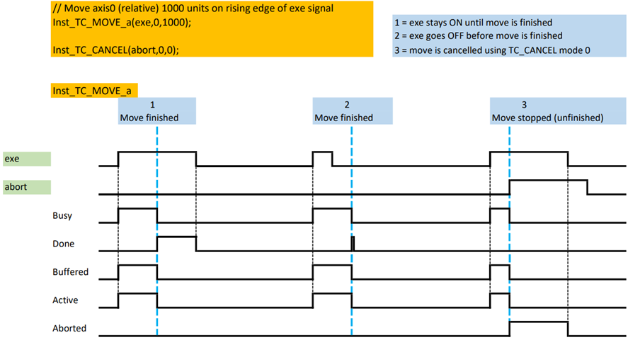
Execution timing diagram of one TC_MOVE instance
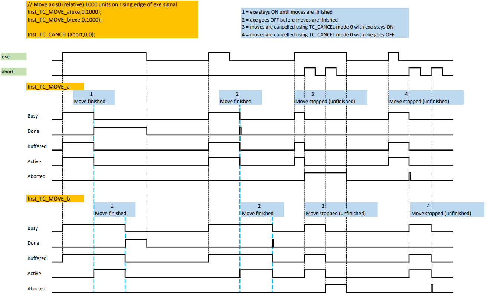
Execution timing diagram of two TC_MOVE instances
Inst_TC_MOVE3( Execute (*BOOL*) , AxisNo (*USINT*) , Dist1 (*LREAL*) , Dist2 (*LREAL*) , Dist3 (*LREAL*) );
The program starts by calling a subprogram ST_Init that initialises axis0, axis1, and axis2 parameters. After switching WDOG ON, an interpolated move between axis0, axis1, and axis2 is executed. Once the move is done, WDOG is switched OFF.
ST_Init();
// Switch on WDOG
TCW_WDOG
(
1
);
// Interpolated move between axis0, axis1, and axis2
Inst_TC_MOVE2(
TRUE
,
0
,
2000
,
4000
,
6000
);
// Switch off WDOG once move is executed
IF
Inst_TC_MOVE2.Done
=
TRUE
THEN
TCW_WDOG
(
0
);
END_IF
;
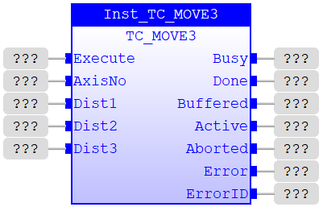
The program starts by calling a subprogram FBD_Init that initialises axis0, axis1, and axis2 parameters. Once initialised, relevant starting positions are assigned to each axis. After switching WDOG ON, an interpolated move between axis0, axis1, and axis2 is executed inside FBD_Move3 program. Once the move is done, WDOG is switched OFF.
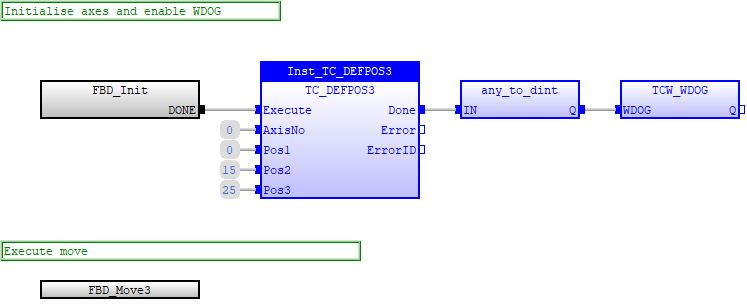
FBD_Init subprogram:
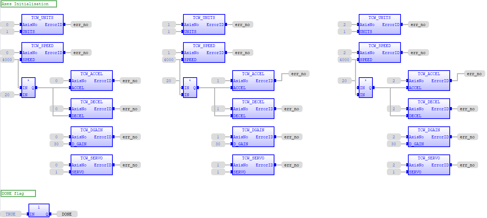
FBD_Move3 subprogram:
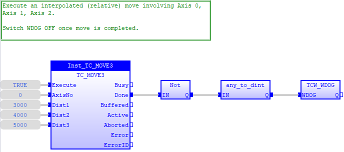
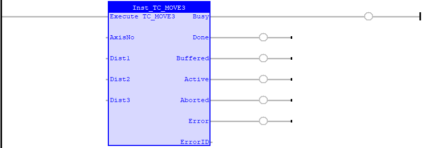
Move axes 0, 1, and 2 with interpolation. Once the move is done, switch WDOG OFF.
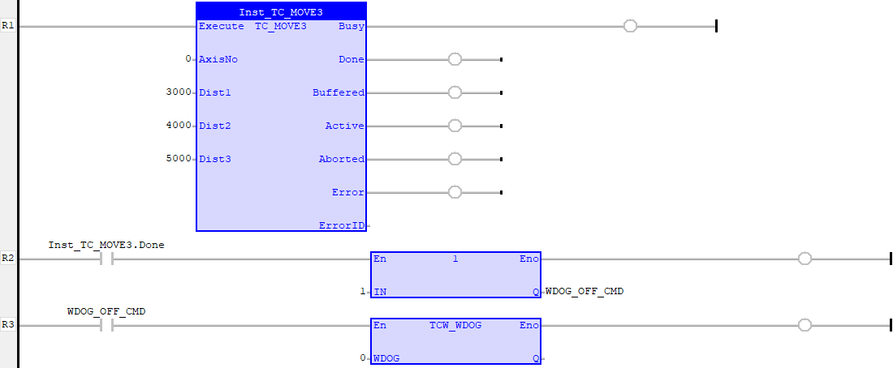
The program starts by calling a subprogram LD_Init that initialises axis0, axis1, and axis2 parameters. Once initialised, relevant starting positions are assigned to each axis. After switching WDOG ON, an interpolated move between axis0, axis1, and axis2 is executed inside FBD_Move3 program. Once the move is done, WDOG is switched OFF.
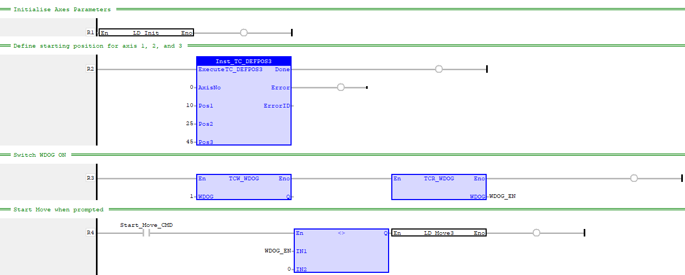
LD_INIT subprogram:
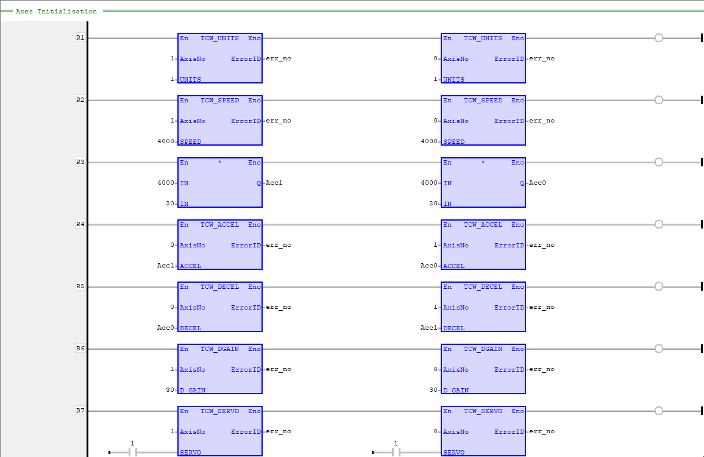
LD_MOVE3 subprogram:
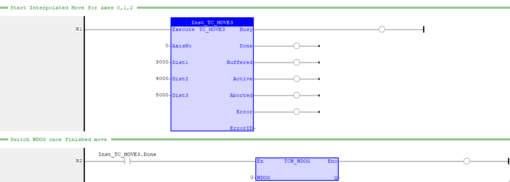
TC_MOVE1 , TC_MOVE2 , TrioBASIC Errors